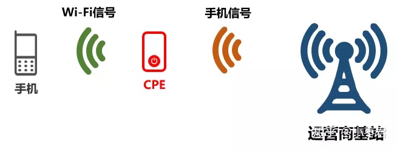
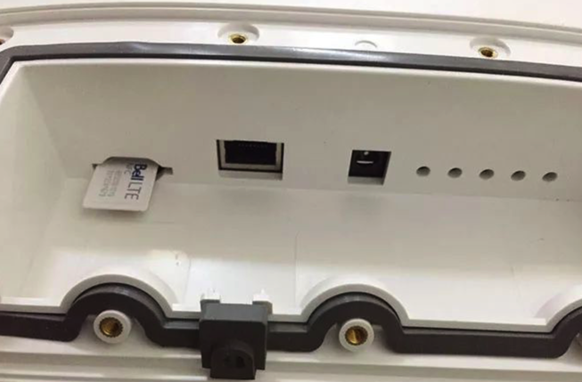
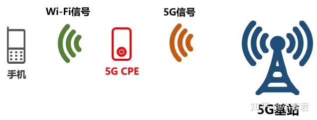
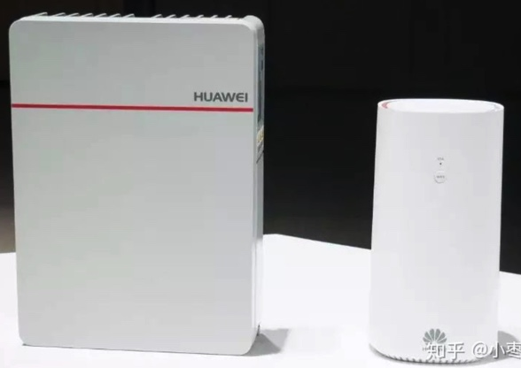
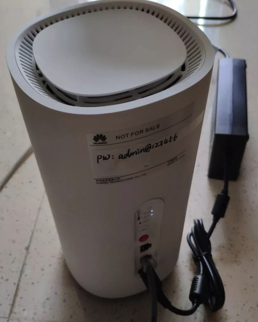

主页
1.1.
前言
1.2.
5G概述
1.2.1.
5G和4G对比
1.3.
5G相关组织
1.4.
5G技术架构
1.5.
5G应用和现状
1.5.1.
5G应用
1.5.2.
5G现状
1.5.2.1.
中国
1.5.2.1.1.
苏州
1.6.
附录
1.6.1.
名词解释
1.6.1.1.
CPE
1.6.2.
参考资料
本书使用 GitBook 发布
CPE
CPE
CPE
=
Customer Premise Equipment
=
客户终端设备
Premise
：前提、假设
感觉更准确的翻译为：
客户前置设备
作用：4G信号转Wi-Fi，并二次中继
对手机信号（例如4G信号）进行二次中继。中继后，发出Wi-Fi信号
把Wi-Fi信号进行二次中继，延长Wi-Fi的覆盖范围

不同角度：
对于基站：它就是一个手机
CPE可以插入SIM卡

5G CPE
支持5G网络的CPE，可以接收5G网络信号，并以此建立一个Wi-Fi网络

产品举例


results matching "
"
No results matching "
"